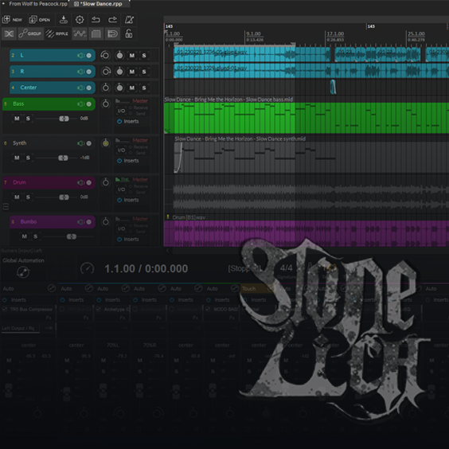
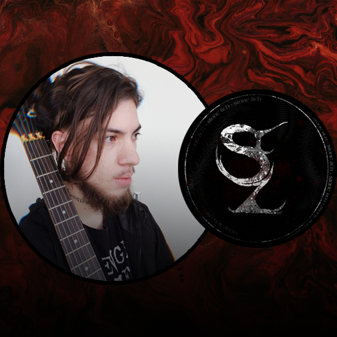

JARAGUENSES

Projeto paralelo de Banda Punk chamada Jaraguenses, ansiosos em tirar este projeto do papel, temos como objetivo passar críticas sistemicas com o teor cômico, porém, sempre expondo nossas ideias!
STONE LICH
Projeto de álbum mais cobiçado do grupo, com anos de desenvolvimento, visa possuir um arquetipo instrospectivo com inspirações dos gêneros Nu metal, MetalCore e DeathCore

YOUTUBE CHANNELS

Produção de covers de múscas e bandas que acompanhamos e admiramos, no canal Stone Lich e
Todos direitos reservados ©